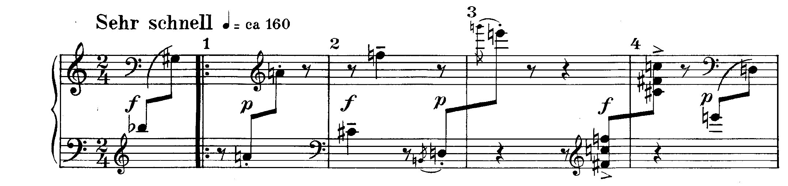
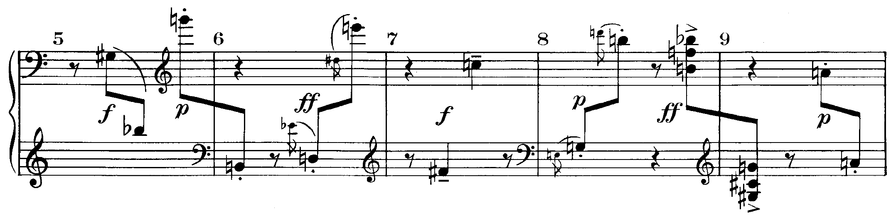
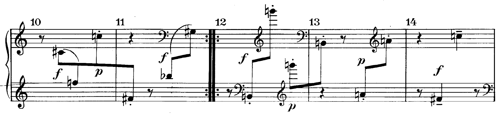
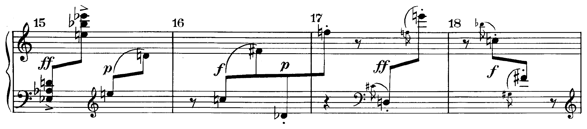
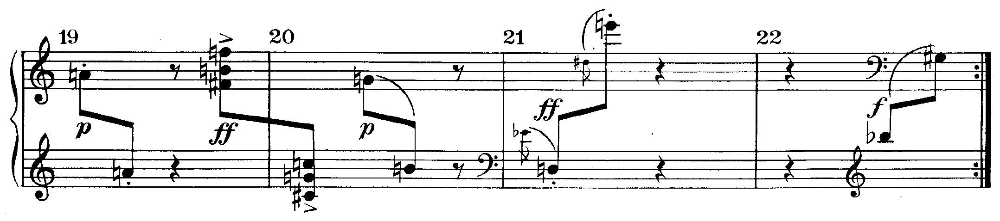

L’analisi integrale scritta del secondo movimento delle Variazioni op. 27: dall’ascolto alla tesi, dai quattro piani al testo.
Al posto degli intervalli principali di prima — dominante, sottodominante, mediante, ecc. — acquistano adesso valore le simmetrie, le regolarità.
A. Webern, conferenza del 26 febbraio 1932, in E. Surian, Manuale di storia della musica, IV, p. 125
CLa prova di tipo A: «analisi di una composizione, o di una sua parte significativa, tratta preferibilmente dalla letteratura musicale del XX secolo con relativa contestualizzazione storico-culturale», p. 270 · B23la dodecafonia, pp. 262–265 · D. D’Urso, C. Bertolini, Il linguaggio della musica, 5° anno.
1. Ogni forma della serie si nomina con il tipo e con il primo suono (RI da si♭), e si dice da dove viene: dalla serie del libro, dalla partitura, dall’analisi. 2. Si dichiara come si sono divisi i suoni fra le voci, quando la partitura non lo dice: è la segmentazione, e da essa dipende tutto il resto. 3. Registro, durata, dinamica e modo d’attacco si scrivono accanto alle altezze: in Webern sono materiale quanto le note. 4. Prima il dato con la battuta, poi l’interpretazione; le indicazioni dell’autore in corsivo, come stampate.
La tavola delle serie al posto dell’analisi. Elencare le forme della serie battuta per battuta è il lavoro preparatorio; il testo deve dire che cosa quell’ordine produce nel pezzo che si ascolta: lo specchio, i registri, la forma, il carattere.





Scrivi l’analisi integrale del secondo movimento delle Variazioni op. 27: intestazione, introduzione con la tesi, i quattro piani (parametri; materiale e serie; forma; stile e contesto), conclusione con le fonti.
L’intestazione; una tesi verificabile; nei quattro piani i dati con le battute: lo specchio sul la e le coppie di registro, le forme della serie con la segmentazione dichiarata, la forma in due metà, il contesto con le fonti; una conclusione che risponda alla tesi.
Dalla serie (op. 25) allo specchio (op. 27, op. 16), ai cicli (Messiaen), alla massa (Ligeti), al timbro (Varèse): ogni pezzo ha un ordine, e l’analisi deve dire dove sta e che cosa se ne sente.
La lezione si chiude con il solfeggio: si leggono a nomi, in tempo, le bb. 12–15, battendo la croma. Con questa lezione si chiude l’unità sulla serie e su ciò che viene dopo la serie.
Compiti per la prossima volta
Scrivi l’analisi integrale di «Dormi Jesu», op. 16 n. 2: intestazione, introduzione con la tesi, i quattro piani, conclusione con le fonti.
Sul quaderno, a matita. La foto del lavoro finito va su Classroom. Nel Workbook: apri l’esercizio C5-U8-L9-01 ↗
Compiti per la prossima volta
Ogni pezzo a tempo, senza fermarti: il parlato a nomi, il cantato prendendo il primo suono dalla tastiera, il ritmico battendo la pulsazione.
Scrivi la linea del basso sul quaderno, in chiave di basso: otto battute in 2/4, la maggiore. Il primo suono è do♯. Prima il riferimento, poi tutto due volte, ogni coppia di battute due volte, il collegamento 1–4, 3–6 e 5–8, e tutto per controllare.
Il riferimento: accordo di tonica e primo suono
Il dettato · otto battute
Le sezioni (riferimento, tutto, le coppie, il collegamento) si ascoltano una per una e si ripetono quanto serve; le fasi fanno la procedura della classe, con gli annunci e le pause, da qualunque punto.
Sul quaderno scrivi in testa la sigla C5-D-U08-L9. Si corregge all’inizio della prossima lezione.
Compiti per la prossima volta
Scrivi un contrappunto di quarta specie (la sincope) sotto il canto fermo, in modo ionico (finale do): otto battute. Comincia su una consonanza perfetta, alla cadenza la sensibile sale alla finale, niente quinte e ottave consecutive.
Sul quaderno, con la sigla C5-CP-U08-L9 in testa; la foto va su Classroom.
Realizza a quattro parti il basso senza numeri: sedici battute in 4/4, si♭ maggiore. Trova tu l’accordo di ogni nota (la regola dell’ottava è il punto di partenza) e scrivilo sotto; poi il soprano, poi le voci interne. Accordi che puoi usare: tutto quello studiato, e una modulazione a un tono vicino.
Sul quaderno, con la sigla C5-BD-U08-L9 in testa; la foto va su Classroom.
Armonizza a quattro parti il canto dato: sedici battute in 4/4, sol minore. Prima le cadenze, poi il basso per intero, e solo alla fine contralto e tenore. Accordi che puoi usare: tutto quello studiato, e una modulazione a un tono vicino. La melodia modula: trova dove, e in quale tonalità arriva.
Sul quaderno, con la sigla C5-CD-U08-L9 in testa; la foto va su Classroom.
Scritto: Analisi integrale scritta: «Dormi Jesu» (Workbook, esercizio C5-U8-L9-01), sul quaderno; la foto va su Classroom. Solfeggio dal quaderno di lettura: cantato n. 520, 521 (a tempo, senza fermarsi). Dettato C5-D-U08-L9 dalla pagina della lezione (sezioni da ascoltare, o le fasi della procedura guidata), sul quaderno con la sigla. Contrappunto di quarta specie sul canto fermo (C5-CP-U08-L9). Basso senza numeri da realizzare a quattro parti (C5-BD-U08-L9). Canto dato da armonizzare a quattro parti (C5-CD-U08-L9).
In classe
Si prende il tono dalla tastiera, si canta insieme; poi a gruppi.
Apri il n. 518 nel quaderno di lettura ↗ chiave di violino · 6/8 · mi minore
Apri il n. 519 nel quaderno di lettura ↗ chiave di violino · 3/4 · sol minore